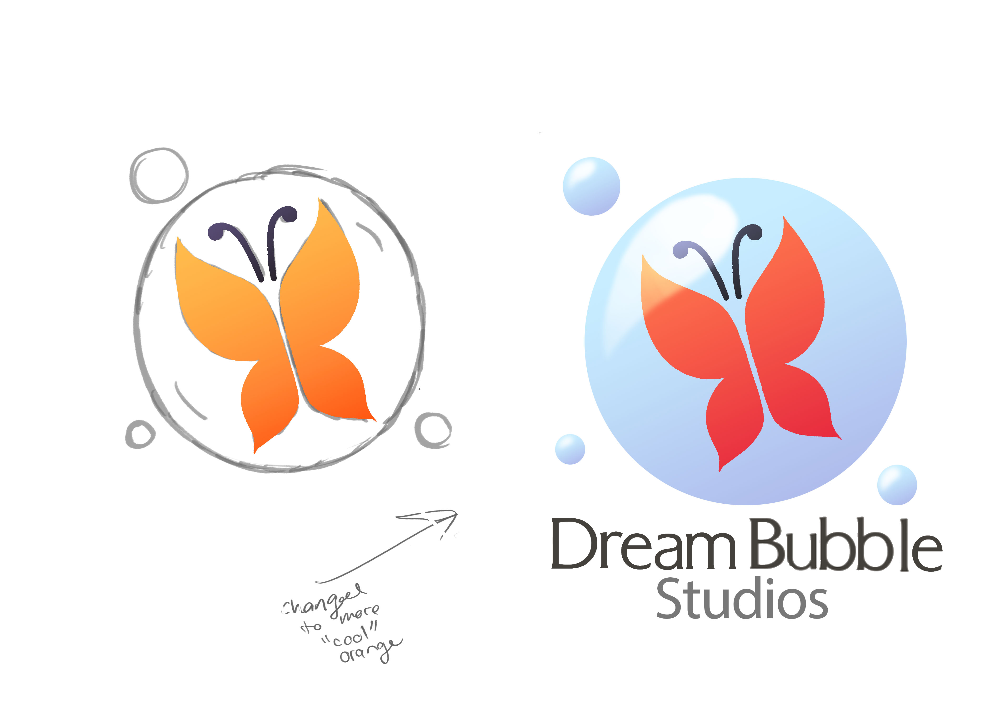
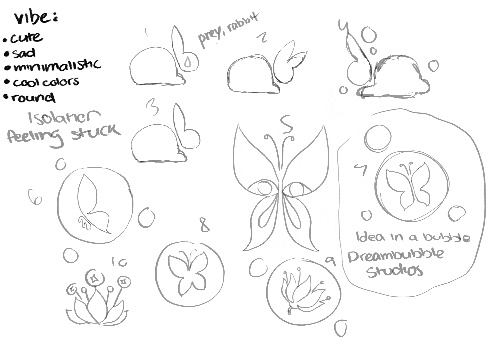

About Me
I am an aspiring artist working in both digital drawing tools and coding development for both the web and gaming. I focus mostly on the visual arts and design principles and elements.
In my free time, I greatly enjoy writing and creating artwork and characters for myself to eventually publish or share online. During my personal writing and drawing times, I also invest a lot of time into researching techniquese of composition and design as well as art history and writing theories.
Projects
-
See design process record here: - 2-D Individual Game.
This project was an introduction and self learning experience with using Unity Engine and C# to develop a functioning 2D game. The project required at least 6 total base mechanics, whether it was movement based or game system. The project was a great experience for self-teaching and problem solving.
-
See a video of our game below! - Interactive Comic.
This project was a group project in which our team of four created an immersive comic experience using unity engine and application framework programs like Adobe XD. This was one of my most ambitious works and it was very successful team effort. A lot of skills were on display for this project, a few of which are below:
-
See the full document on my process here. - Logo Creation.
This project was an individual work in which we studied aspects of iconography and logo design, what is eyecatching to the eye, pleasing to view, and memorable. I created my own initial ideas, working though several iterations of a base idea around a few concepts. I chose the topics of dreams, soft, and bubbles. Eventually I landed on a satisfying base that I am proud of sharing.



Personal Endeavors
Contact Me
Email: laurynkola@gmail.com